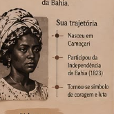

LUTA E MEMÓRIA
Maria Felipa de Oliveira
Maria Felipa é lembrada como uma mulher negra, marisqueira e liderança da Ilha de Itaparica, na Bahia. Sua memória está ligada à luta pela Independência da Bahia, em 1823. Relatos populares contam que ela reuniu mulheres e homens da ilha para resistir às tropas portuguesas. Sua trajetória representa a força e a participação das mulheres negras na história do país.